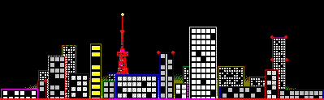

<!-- 
 -->

<body></body>
<script>
  
  function createGif(x, y) {
    const gif = document.createElement('img')	
    gif.src = 'city.gif'
    gif.style.position = 'absolute' 
    gif.style.top = y + 'px'
    gif.style.left = x + 'px'
    document.body.appendChild(gif)  
  }
  
  // createGif(0,0)
  // createGif(399,0)
 
 
  

  
  
  for (let i=0; i < 100; i++) {
  	const x = i*400 
    createGif(x, 0)
  }
  
  document.body.style.backgroundColor = 'purple'
</script>